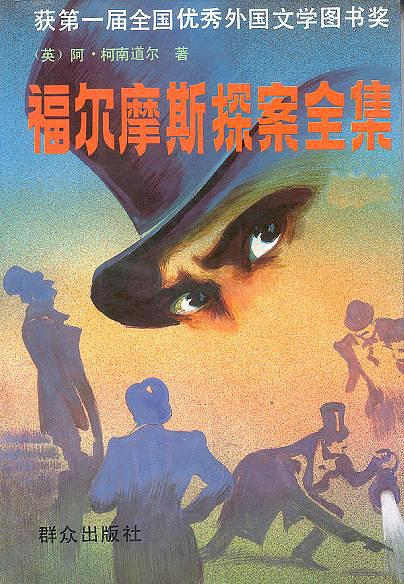
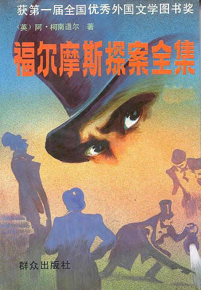

关于此网站
本网站致力于为每一个爱书人士推出能激励个人成长的好书！只有当一本书提供了精神成长、工作技能的提升，才会被我们所推荐！读书的益处:
1. 读书可以增加谈吐深度2.读书可以保持大脑的活跃
3.读书可以使人抵抗孤独
4.读书可以释放压力
5.读书使人明智
小组信息
学院：经贸学院班级：17电子商务B2班
小组：“高尔基”小组
《福尔摩斯探案集》
《福尔摩斯探案全集》是英国作家阿瑟·柯南道尔创作的小说集，主角名为夏洛克·福尔摩斯（Sherlock Holmes，又译作歇洛克·福尔摩斯），共有4部长篇及56个短篇。
故事背景充分结合了英国当时政治、经济的情况，柯南道尔的创作笔法和叙事角度也日益圆熟多变，许多人甚至以为真有其人其事。在本小说中，除了那些惊心动魄、耸人听闻的探案，更多的是表现人与人之间的嫉妒、猜疑、仇恨。丈夫谋杀妻子、叔父为财产毒死侄子、两个兄长杀死妹妹等等，这些罪行将人性的丑恶展现无遗。此外，福尔摩斯与华生为了正义却时而触犯法律，比如说为了盗取一封信件而潜入诈骗犯的住宅、因同情并放走了为爱人复仇，杀死法律制裁不了的两个凶犯的特雷根尼斯博士等等，也在一定程度上宣扬了人道主义的惩恶扬善的思想，迎合了广大公众的心理。。
而故事的主角福尔摩斯虽然性格让人不可捉摸，他喜欢听人夸赞，对女性比较反感，曾经在《四签名》中被华生评价为“在调查过程中如机器一样冷酷无情”，但在《临终的侦探》中却又表现出他对华生深厚的友情与信任，当华生要触碰那个暗藏毒针的象牙盒子时，他发疯似地怒吼阻止，紧接着又恢复平常的状态，这样一点点似有若无的情感流露使他的个性变的更复杂。
而书中最大的反派莫里亚蒂，他控制着伦敦所有的罪恶，而表面上却又一副道貌岸然的教授模样，受人尊敬，这也可以说是柯南道尔也是作者对当时社会以及政府的控诉。他通过对《恐怖谷》中道格拉斯的悲惨遭遇的描写，让广大读者对他们的际遇抱以深深的同情，也让读者对莫里亚蒂一伙儿的恶行充满愤怒，更重要的是，让现实生活中的种种不公在人们心里浮现，引起共鸣。
《福尔摩斯探案全集》被称为侦探小说中的“圣经”，一百多年来被译成57种文字，畅销世界各地。福尔摩斯更是成了名侦探的代名词，他与华生的搭档组合，以及“神探”的典型等，都对后世的侦探小说有着极其深远的影响。英国著名小说家毛姆曾说：“和柯南道尔所写的《福尔摩斯探案全集》相比，没有任何侦探小说曾享有那么大的声誉。”
故事背景充分结合了英国当时政治、经济的情况，柯南道尔的创作笔法和叙事角度也日益圆熟多变，许多人甚至以为真有其人其事。在本小说中，除了那些惊心动魄、耸人听闻的探案，更多的是表现人与人之间的嫉妒、猜疑、仇恨。丈夫谋杀妻子、叔父为财产毒死侄子、两个兄长杀死妹妹等等，这些罪行将人性的丑恶展现无遗。此外，福尔摩斯与华生为了正义却时而触犯法律，比如说为了盗取一封信件而潜入诈骗犯的住宅、因同情并放走了为爱人复仇，杀死法律制裁不了的两个凶犯的特雷根尼斯博士等等，也在一定程度上宣扬了人道主义的惩恶扬善的思想，迎合了广大公众的心理。。
而故事的主角福尔摩斯虽然性格让人不可捉摸，他喜欢听人夸赞，对女性比较反感，曾经在《四签名》中被华生评价为“在调查过程中如机器一样冷酷无情”，但在《临终的侦探》中却又表现出他对华生深厚的友情与信任，当华生要触碰那个暗藏毒针的象牙盒子时，他发疯似地怒吼阻止，紧接着又恢复平常的状态，这样一点点似有若无的情感流露使他的个性变的更复杂。
而书中最大的反派莫里亚蒂，他控制着伦敦所有的罪恶，而表面上却又一副道貌岸然的教授模样，受人尊敬，这也可以说是柯南道尔也是作者对当时社会以及政府的控诉。他通过对《恐怖谷》中道格拉斯的悲惨遭遇的描写，让广大读者对他们的际遇抱以深深的同情，也让读者对莫里亚蒂一伙儿的恶行充满愤怒，更重要的是，让现实生活中的种种不公在人们心里浮现，引起共鸣。
《福尔摩斯探案全集》被称为侦探小说中的“圣经”，一百多年来被译成57种文字，畅销世界各地。福尔摩斯更是成了名侦探的代名词，他与华生的搭档组合，以及“神探”的典型等，都对后世的侦探小说有着极其深远的影响。英国著名小说家毛姆曾说：“和柯南道尔所写的《福尔摩斯探案全集》相比，没有任何侦探小说曾享有那么大的声誉。”
关于书籍的格言
为乐趣而读书。 —— 毛姆 读书之法，在循序而渐进，熟读而精思。 —— 朱熹
读书使人心明眼亮。 —— 伏尔泰